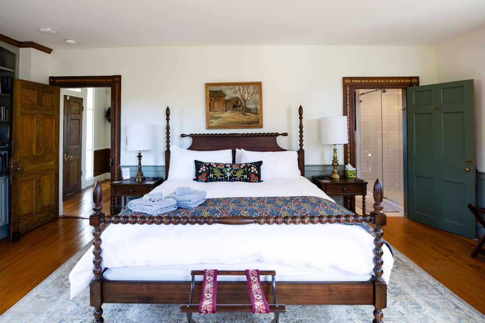
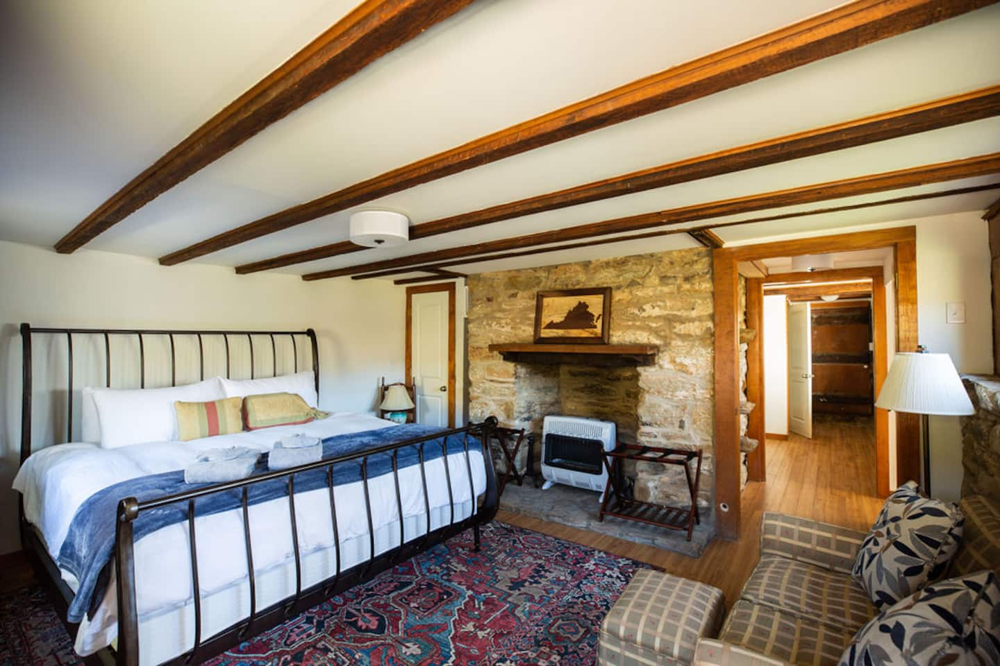

Farmhouse
5 bedrooms · 4 full & 2 half baths · sleeps about 10, plus children

Roseland, Virginia
Historic comfort, mountain light, and seventy acres of pasture, river, and quiet. A place to stay together — and, when the moment calls for it, a place to gather.
Reserve a stay Plan a gathering
Stay
Lovingly kept and thoughtfully updated, the main house is the heart of High View — a dining table that opens to fourteen, a kitchen with mountain views, and bedrooms made for real rest.
The listing includes the five-bedroom farmhouse. For larger parties, the Guest Cottage and historic Schoolhouse can be added for an additional fee, bringing the property to eleven bedrooms and space for extended family or a small retreat.
High-speed fiber Wi-Fi, a private hot tub, two kitchens, and family-friendly sleeping (including a crib, toddler bed, and Pack ’n Plays). Pets are welcome.
5 bedrooms · 4 full & 2 half baths · sleeps about 10, plus children
4 bedrooms · 3 baths · sleeps 9 · a short walk down the hill
2 bedrooms · historic loft · sleeps 4–5 · add-on for larger stays
Gather
High View is at its best when people come together — family reunions, quiet retreats, milestone birthdays, and intimate weekends with room to breathe.
Outdoor dining on the grounds, a fire pit, bocce, and long views of the Blue Ridge make the farm feel like a private park. Inside, the farmhouse kitchen and dining room are ready for a house full of cooks.
We host small gatherings rather than large public events. If you are planning a reunion, retreat, or celebration, inquire when you book so we can help you shape the stay.


The Farm
Scottish Highland cattle and miniature donkeys graze the fields. The South Rockfish River and a pond are close at hand for a swim or a line in the water. At night the farm is dark, quiet, and thick with fireflies in summer.



Guest words
“We stayed with 11 adults and 8 children and had plenty of room. There was plenty for the kids to do — the trampoline and rope swing were a huge hit. We would absolutely love to stay here again.” Amanda · Airbnb
“The farm is absolutely amazing. The property is one big playground: animals, swings, ropes, trampoline, basketball, and hot tub. The kitchen is perfect for cooking and hanging out at the same time.” Karen & Sean · Airbnb
Visit
In rural Roseland, in the Blue Ridge of Nelson County. Hiking at Wintergreen and the Rockfish Valley Loop is nearby; Charlottesville is an easy drive.
High View Farm